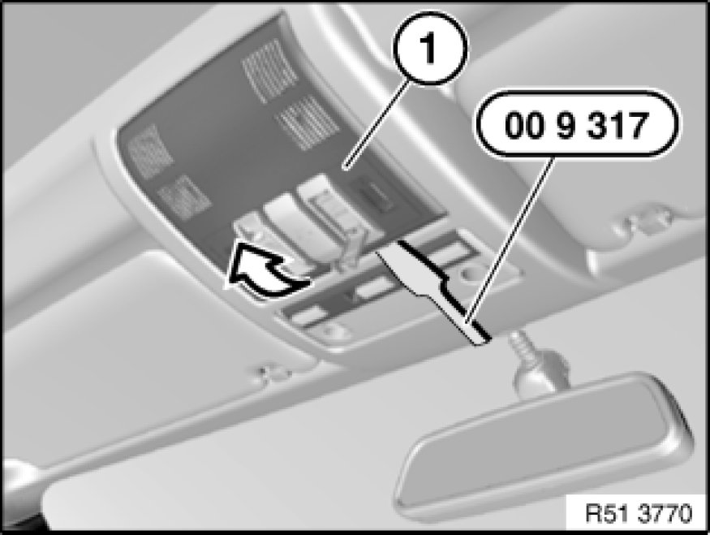

51 44 ... - Removing and installing front roofliner trim
51 44 ... - Removing and installing front roofliner trim

Special tools required:
- 00 9 317 00 9 317 Trim Panel Wedge

Unclip trim (1) with special tool 00 9 317 00 9 317 Trim Panel Wedge in direction of arrow.
Disconnect associated plug connections and remove trim (1).
Installation:
Make sure all-round catches of trim (1) are correctly seated.

Important!
Disconnecting the plug connection for the hands-free microphone or emergency SOS call button results in fault memory entries in the telephone control unit (limitation in the emergency SOS call system).
After fitting, read out fault memory and if necessary delete entries.